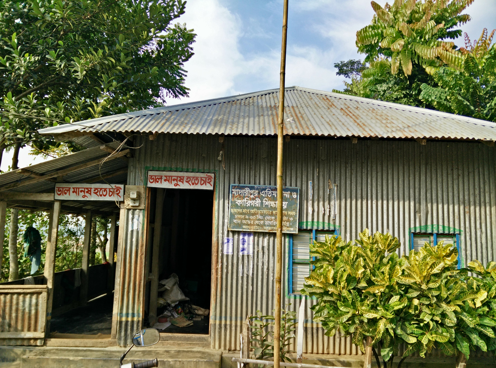
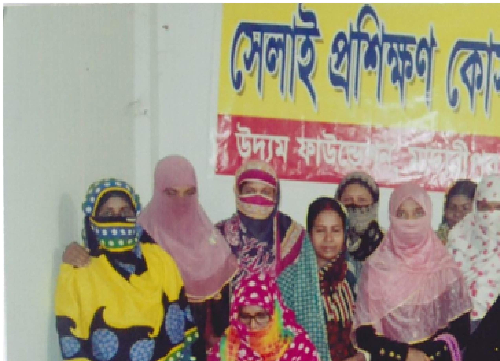
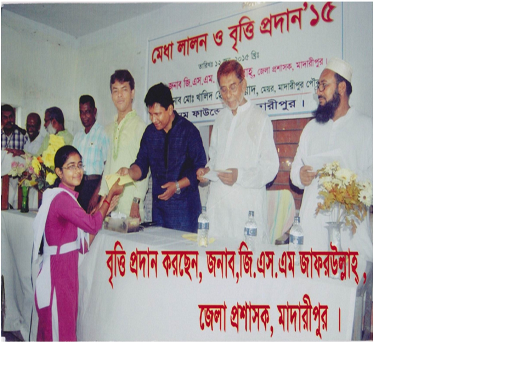
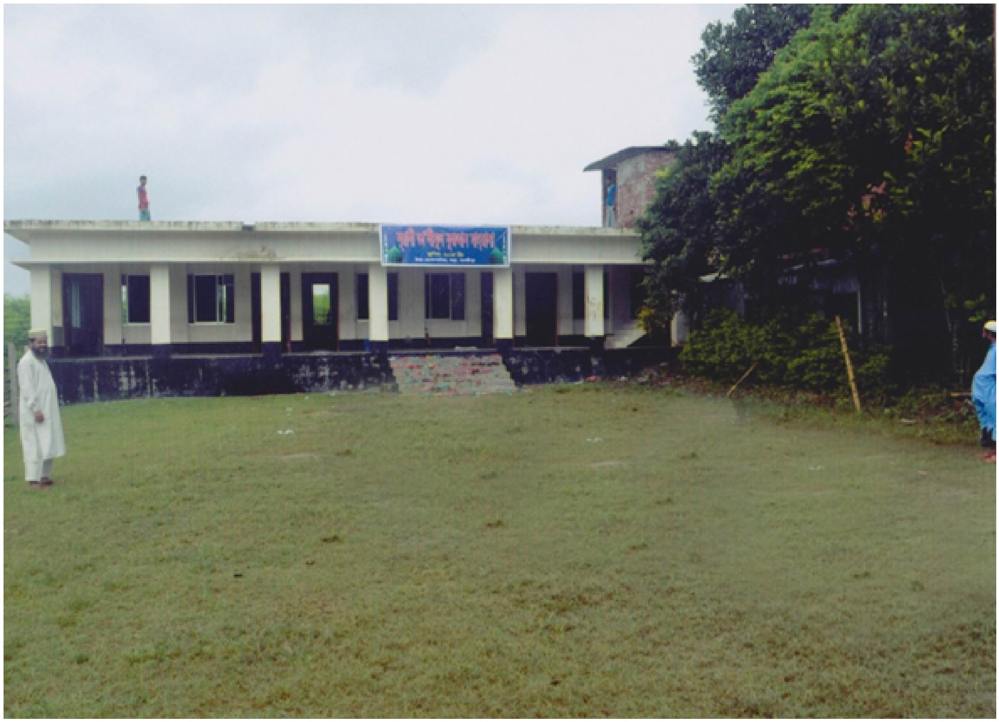

Meet Our Orphans
He lost both of his parents and were living with his grandmother who could barely make it for herself. Ibrahim now lives at the Uddam orphanage and one of the top in his class.

The house
Nestled in the greenery of Brahmondi Village stands the orphanage hosting 24 orphan kids, taking care for their childhood.

The gang
Yes, the cat lives with them and they love the school dress color

Vocational Training Course
Unprivileged women’s three months Sewing Training Course. After successfull completion of the training they can earn 5-8 thousand taka per month

scholarship Distribution Program
Mr. GSM Jafarullah, District Commissioner of Madaripur is giving the scholarship as chief guest and Mayor Khalid Hossain Yiad was also present as special guest

New School Building
New School Building for unprivileged and orphanage (built in 2006)